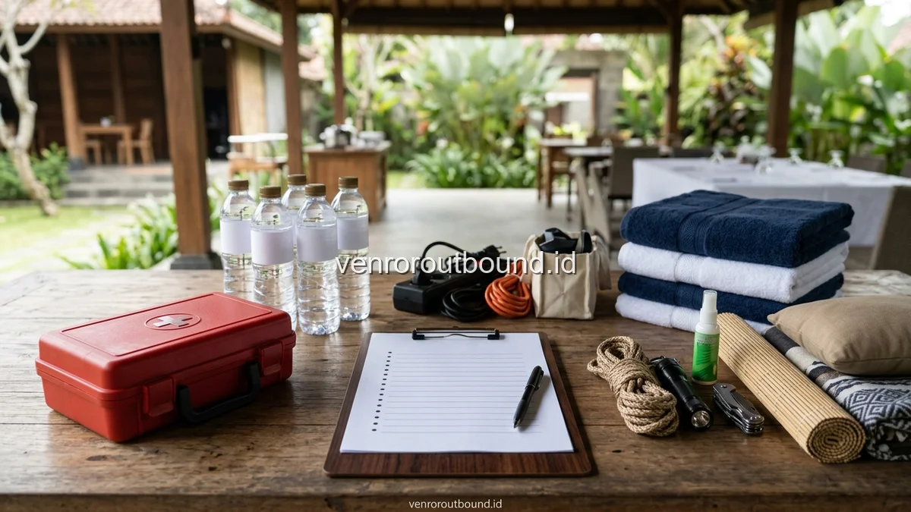

1. Mengapa Keamanan dan Aksesibilitas Menjadi Prioritas Utama?
Jawaban Singkat: Persiapan family gathering multi-generasi membutuhkan perhatian khusus pada aksesibilitas lokasi, ketersediaan area berteduh, fasilitas sanitasi bersih, dan menu makanan yang sesuai untuk semua rentang usia. Pastikan juga ketersediaan tim P3K selama acara untuk mewujudkan outbound keluarga aman, nyaman, dan berkesan bagi seluruh anggota keluarga.
Menyelenggarakan acara kumpul keluarga besar yang melibatkan berbagai rentang generasi—mulai dari balita yang aktif bereksplorasi hingga kakek-nenek berusia lanjut—memerlukan standar persiapan yang sangat teliti. Dalam acara multi-generasi, tolok ukur kesuksesan bukan terletak pada seberapa padatnya susunan acara, melainkan pada seberapa nyaman dan amannya setiap anggota keluarga menikmati momen kebersamaan tersebut.
Tantangan terbesar yang sering dihadapi panitia keluarga adalah menyelaraskan kebutuhan mobilitas yang kontras. Generasi muda mungkin menginginkan area terbuka yang luas untuk berlari dan bermain dinamis, sedangkan generasi lansia membutuhkan permukaan lantai yang datar, tempat duduk yang teduh, serta jarak tempuh yang dekat menuju fasilitas toilet. Tanpa perencanaan checklist yang sistematis, risiko kelelahan ekstrem, salah langkah pada undakan licin, atau dehidrasi dapat mengurangi keceriaan acara.
Oleh karena itu, penyusunan daftar periksa (checklist) yang komprehensif menjadi panduan operasional wajib bagi panitia acara reuni keluarga. Dengan memetakan setiap parameter sejak masa survei lokasi hingga hari pelaksanaan, panitia dapat mengidentifikasi potensi bahaya lingkungan dan menyiapkan langkah antisipasi terukur.
2. Checklist Parameter Lokasi & Aksesibilitas Venue
Pemilihan lokasi (venue) merupakan pondasi utama keselamatan gathering keluarga. Saat mengevaluasi lokasi di destinasi pegunungan seperti Batu, Malang, atau kawasan wisata alam lainnya di Jawa Timur, perhatikan checklist parameter berikut:
- Akses Kendaraan & Drop-Off Point: Pastikan armada kendaraan (mobil keluarga, minibus elf, atau bus wisata) dapat menurunkan penumpang tepat di depan pintu gerbang aula tanpa mengharuskan lansia berjalan menanjak terjal dari area parkir.
- Kontur Permukaan Tanah & Jalur Pejalan Kaki: Utamakan area rumput yang dipangkas rata dan bebas dari lubang tersembunyi, pecahan batu tajam, atau akar pohon besar yang menyembul. Jika terdapat jalur paving, pastikan teksturnya tidak licin saat terkena embun pagi atau rintik hujan.
- Keberadaan Pendopo Semi-Outdoor Beratap Luas: Venue wajib memiliki bangunan aula terbuka atau pendopo beratap kokoh yang mampu menampung seluruh peserta sekaligus, berfungsi sebagai zona perlindungan saat cuaca berubah terik atau mendung.
- Aksesibilitas dan Kebersihan Fasilitas Toilet: Toilet harus memiliki pencahayaan terang, ventilasi baik, lantai bertekstur kesat (tidak licin), serta terletak kurang dari 50 meter dari zona kumpul utama tanpa harus melewati tangga curam berundak.
- Pagar Pengaman Alami: Pastikan tepi area gathering yang berbatasan dengan tebing, lereng sungai, atau kolam renang dalam telah dilengkapi pagar pembatas kokoh demi keselamatan anak-anak balita.
3. Checklist Kenyamanan & Pengawasan Anak-Anak
Anak-anak memiliki rasa ingin tahu yang tinggi dan naluri gerak aktif tanpa menyadari risiko di sekelilingnya. Untuk menjamin keselamatan buah hati selama acara berlangsung, terapkan daftar periksa berikut:
A. Penetapan Zonasi Bermain Bebas Hambatan: Tentukan area khusus bermain anak yang lapang dan steril dari kabel instalasi listrik panggung, genangan air, atau peralatan katering yang panas. Berikan tanda batas visual yang jelas.
B. Pembagian Tim Pendamping (Buddy System): Bentuk tim panitia muda atau jadwalkan rotasi orang tua untuk mendampingi anak-anak saat bermain, sehingga tidak ada anak yang terlepas dari pandangan mata atau berjalan sendirian ke area terpencil.
C. Perlengkapan Pelindung Pribadi: Ingatkan setiap orang tua untuk membawa ransel perlengkapan anak yang berisi pakaian ganti minimal dua set, topi pelindung sinar UV, krim tabir surya anak, minyak telon/lotion antinyamuk, serta botol minum bertali (tumbler) pribadi.
D. Opsi Permainan Cadangan Dalam Ruangan (Plan B): Siapkan perangkat mewarnai, balok susun puzzle, atau mini games interaktif di dalam pendopo apabila kondisi cuaca luar ruang tidak bersahabat.

4. Checklist Fasilitas Khusus Lansia & Anggota Senior
Menghormati dan membahagiakan para sesepuh keluarga adalah inti dari reuni multi-generasi. Berikan perhatian khusus pada detail fasilitas berikut:
- Kursi Ergonomis Bersandaran: Hindari mewajibkan lansia duduk bersila di atas terpal rumput dalam waktu lama. Sediakan kursi santai dengan sandaran punggung dan tangan yang kokoh di dekat arena permainan agar mereka dapat menonton dengan rileks.
- Tata Letak Sirkulasi Angin yang Bersahabat: Tempatkan area duduk lansia di posisi pendopo yang teduh dan terlindung dari hembusan angin gunung yang menusuk tulang secara langsung. Sediakan syal atau selimut cadangan.
- Jadwal Fleksibel & Area Istirahat Tenang: Sediakan satu ruangan privat atau sudut gazebo yang tenang di mana kakek dan nenek dapat merebahkan diri sejenak apabila merasa lelah sebelum acara makan bersama dimulai.
- Pendataan Kebutuhan Obat Mandiri: Koordinasikan dengan keluarga inti agar membawa obat resep harian masing-masing lansia (seperti obat tensi, asam urat, atau suplemen vitamin).
5. Checklist Manajemen Konsumsi, Menu Sehat, & Hidrasi
Pengaturan hidangan yang higienis dan ramah usia sangat mempengaruhi energi dan kebahagiaan seluruh peserta. Berikut poin-poin penting konsumsi:
A. Menu Prasmanan Inklusif: Sajikan pilihan hidangan nusantara dengan tekstur daging yang empuk, sayuran berkuah hangat yang segar (sop buntut, soto ayam, atau capcay), serta memisahkan bumbu sambal dan saus cabai di mangkuk terpisah.
B. Stasiun Hidrasi Berlimpah: Letakkan galon dispenser air mineral di beberapa titik strategis yang mudah dijangkau. Sediakan pula teko teh melati hangat, air jeruk hangat, dan minuman tradisional penghangat tubuh seperti wedang ronde atau jahe sereh gula merah.
C. Camilan Bergizi untuk Waktu Jeda: Siapkan kudapan sehat berupa buah potong dingin (semangka, melon, jeruk manis), jagung manis rebus, pisang rebus, serta kue basah tradisional yang rendah minyak.
6. Checklist Pertolongan Pertama (P3K) & Tanggap Darurat
Meskipun intensitas dinamika permainan keluarga bersifat ringan, kesiapsiagaan medis merupakan standar mutlak yang tidak boleh diabaikan. Panitia wajib menyiapkan pos kesehatan darurat sederhana:
- Kelengkapan Kotak Obat P3K: Antiseptik cair, kasa steril, plester cepat, perban elastis, kompres dingin instan, gunting medis, serta salep pereda luka bakar atau lecet.
- Obat-Obatan Umum Siaga: Parasetamol sirup dan tablet, tablet antasida pereda lambung, oralit hidrasi, minyak kayu putih aromatik, dan obat anti-mabuk darat.
- Pemetaan Jalur Evakuasi & Kontak Medis: Catat nomor telepon puskesmas, klinik 24 jam, atau rumah sakit terdekat dari lokasi acara di Batu/Malang, serta siapkan satu unit kendaraan operasional yang tidak terhalang parkir untuk siaga evakuasi.
7. Kategorisasi Aktivitas Berdasarkan Kapasitas Fisik Peserta
Untuk memastikan setiap generasi dapat berpartisipasi tanpa rasa terbebani, panitia bersama fasilitator outbound dapat mengelompokkan aktivitas permainan menjadi beberapa kategori modular:
1. Aktivitas Duduk & Konsentrasi Santai: Permainan tebak silsilah keluarga, kuis tebak lagu tempo dulu, tebak kata tanpa suara, dan puzzle logika regu yang dapat dimainkan sembari duduk melingkar di pendopo.
2. Aktivitas Koordinasi Halus & Estafet Ringan: Mengalirkan bola pingpong melalui pipa belah plastik pendek, menyusun menara balok kayu harapan, atau estafet gelang karet menggunakan sedotan tanpa perlu berlari kencang.
3. Aktivitas Gerak Ceria Anak: Lomba menangkap gelembung sabun raksasa, joget balon berpasangan dengan orang tua, serta berburu pita warna di area taman rumput berpagar.
Siapkan Family Gathering Multi-Generasi Tanpa Ribet
Dapatkan panduan checklist lengkap, rekomendasi venue ramah lansia, dan rancangan paket gathering keluarga terpadu dari tim konsultan VENDOR OUTBOUND.
Hubungi Kami via WhatsApp8. Tabel Matriks Checklist Operasional Panitia Keluarga
Gunakan tabel komprehensif di bawah ini sebagai lembar verifikasi kesiapan panitia pelaksana sebelum menuju hari-H reuni keluarga besar:
| Sektor Persiapan | Parameter Pemeriksaan Utama | Status Cek | Tanggung Jawab Panitia |
|---|---|---|---|
| Survei Akses Lokasi | Jalan beraspal/datar, parkir luas, bebas tangga curam | ☐ Siap | Koordinator Lapangan & Transportasi |
| Area Berteduh Utama | Pendopo beratap luas, sirkulasi udara sejuk, bersih | ☐ Siap | Koordinator Venue & Logistik |
| Fasilitas Toilet & Air | Sanitasi bersih, air mengalir lancar, lantai tidak licin | ☐ Siap | Tim Perlengkapan Acara |
| Kenyamanan Lansia | Kursi ergonomis, area tenang, pendataan riwayat khusus | ☐ Siap | Koordinator Pendamping Sesepuh |
| Keamanan Zona Anak | Bebas bahaya tebing/kolam dalam, pengawas siaga | ☐ Siap | Tim Pendamping Anak Muda |
| Manajemen Konsumsi | Menu tidak pedas, sayur berkuah, stasiun air minum | ☐ Siap | Seksi Konsumsi & Katering |
| Kotak P3K & Medis | Obat luka, minyak kayu putih, kontak darurat klinik | ☐ Siap | Seksi Pertolongan Pertama |
| Modul Outbound & MC | Fasilitator ramah, games santai inklusif, sound jernih | ☐ Siap | Tim Fasilitator Vendor Outbound |
9. Memilih Format Paket Outbound Keluarga yang Teruji & Fleksibel
Bekerja sama dengan penyedia jasa outbound yang terbiasa menangani segmen keluarga multi-generasi memberikan ketenangan pikiran bagi panitia. Fasilitator berpengalaman mampu membaca dinamika emosional kelompok secara cepat, memperlambat tempo saat peserta tampak lelah, serta menyisipkan humor hangat yang menyatukan hati antar-generasi.
Paket standard gathering umumnya telah mencakup pemandu ramah keluarga, peralatan simulasi yang steril dan aman, sistem pengeras suara portabel, serta pengaturan jadwal yang longgar sehingga acara tidak terasa terburu-buru.
10. Kesimpulan & Langkah Konsultasi Checklist Acara
Keberhasilan family gathering multi-generasi bukan dinilai dari seberapa rumit permainan yang dijalankan, melainkan dari rasa aman, kenyamanan fisik, dan sukacita yang dirasakan oleh setiap anggota keluarga dari kakek-nenek hingga anak-cucu tercinta.
Melalui penerapan checklist persiapan yang disiplin dan koordinasi intensif bersama penyedia outbound profesional, Anda dapat memastikan agenda reuni keluarga besar berlangsung lancar, penuh tawa, dan meninggalkan memori indah yang abadi.
Pertanyaan Sering Diajukan (FAQ)

Arby Ardiansyah
Arby Ardiansyah menulis konten informatif mengenai outbound, team building, corporate gathering, wisata outdoor, dan perencanaan kegiatan kelompok berbasis standar manajemen risiko terpadu di Indonesia.